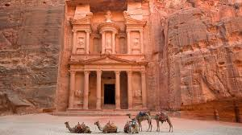

Inhabited since prehistoric times, this Nabatean caravan-city, situated between the Red Sea and Dead Sea, was an important crossroads between Arabia,Egypt and Syria-Phoenicia. Petra ia half-built, half-carved into the rock , and is surrounded by mountains riddled with passages and gorges.It is one of the world's most famous archaeological sites, where ancient Eastern traditions blend with Hellenistic architecture.
